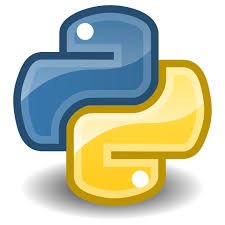

تهيئة بيئة العمل لبايثون وتصحيح الأخطاء

يرجى قراءة التوجيهات بعناية قبل الانتقال إلى الإجابة عن الأسئلة.
توجيهات مهمة قبل البدء
يهدف هذا الكويز إلى التأكد من مدى استيعاب الطالب لمحتوى الدروس، وقياس فهمه للنقاط الأساسية بطريقة منظمة وواضحة.
- من الضروري الإجابة عن جميع الأسئلة دون ترك أي سؤال فارغ.
- تؤخذ الإجابة عن هذا الكويز بعين الاعتبار ضمن التقييم المستمر للأعمال التطبيقية TP.
-
يمكنك الاطلاع على علامتك من خلال الرابط التالي:
اضغط هنا للاطلاع على العلامة
لن تتمكن من بدء الكويز إلا بعد إدخال معلوماتك الشخصية والتأكيد أنك راجعت جميع الدروس واطلعت على جميع فيديوهات الشرح.
الدروس المعنية بالكويز
السؤال 1 / 20
الوقت: 00:00
اختر إجابة واحدة صحيحة لكل سؤال، ثم انتقل إلى السؤال التالي.